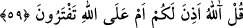

Hayatının tamamını baştan başa sarf etti
Kırâat-ı seb‘a ve aşere öğrenmek için
Bu beytin anlatmak istediği şudur: Arapça harfleri doğru çıkarıp mahreclere riayet
edebilecek kadar Kur’an öğrendikten sonra geri kalan ömrün Allah Teâlâ’yı tanımaya
sarf edilmesi gerekir.
Mârifetullah, kalp ile ilgilidir. Kalp ise dilden ve öteki organlardan daha şerefli bir
organdır. Mârifetullah genellikle zikirle, sonra da eşyânın hakîkatlerinin ve Kur’an’ın
hakîkatlerinin inkişâfını düşünmekle elde edilir.
Allah Teâlâ’nın Hz. Peygamber (s.a.)’i Cebrail (a.s.) ile te’yid ettiği gibi veli
kullarını da Cebrail (a.s.) demek olan Kur’an’la te’yid etmiştir.
Şeriat ilmi dünyada kalır. Çünkü onun ilgili olduğu konular fânîdir. Âhirete sadece
ihlasla yapılan amellerin sevabı götürülür. Hakikat ilmine gelince, bu ilim âhirete
götürülür. Çünkü o bâkîdir; ezeli ve ebedidir, hiçbir yerde zeval bulmaz. Nitekim
şeyhim, bana bu şekilde ifade etmiştir. Allah onun faydalı ilminden bizi de sizi de
faydalandırsın.
59. “De ki: “Baksanıza Allah’ın size rızık olarak indirdiği şeylerin bir kısmını
haram, bir kısmını helal yaptınız.” De ki: “Allah mı size böyle izin verdi, yoksa siz
Allah’a iftira mı ediyorsunuz?”
“De ki: “Baksanıza” Ey müşrikler bana haber verin bakalım “Allah’ın size” helâl
“rızık olarak indirdiği şeylerin…” rızıklar topraktan çıktığı halde âyette rızkın gökten
indirildiği ifâde edilmiştir. “Rızkınız göktedir” (ez-Zâriyat, 51/22) âyetinde belirtildiği
gibi ya gökte takdir edildiği ve topraktan ancak takdir edildiği kadar çıktığı için; ya da
rızık topraktan yağmur, güneş ve ay gibi semâvî sebeplerin yardımı ile çıktığı için böyle
buyrulmuştur. Çünkü yağmur, bitkilerin yerden bitmesinin, güneş ise olgunlaşmalarının
sebebidir.
“bir kısmını haram, bir kısmını helal yaptınız.” Allah’ın bütün indirdikleri helal
olmasına rağmen bu rızkın bir bölümünün haram olduğuna; bir kısmının ise helal
olduğuna hükmettiniz. Yâni, Allah size neyi rızık olarak indirmişse onu kendi kafanıza
göre helal ve haram diye ayırdınız. Bu ifadenin maksadı, müşriklerin rızkı bölümlere
ayırmalarını kötülemektir. Nitekim onlar: “Bu hayvanlarla ekinler haramdır” (el-
En’am, 6/138); “Bu hayvanların karnındakiler, erkeklerimize has olup
kadınlarımıza haramdır.” (el-En’am, 6/138) demişlerdir. Bunlar, bahîra, sâibe, vasîle,